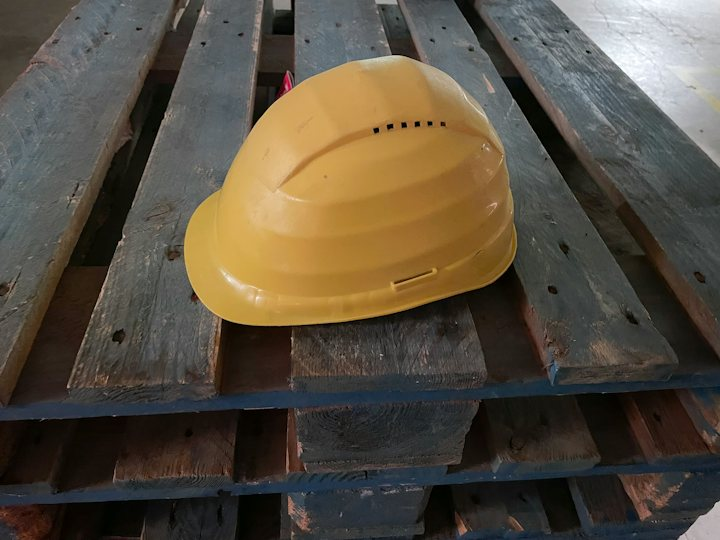

Warm-up · Rule or reminder?

Read each problem from your own work. Decide: does it need a rule, or is a reminder enough? Then say your decision out loud, with a reason.
Make it a rule, or leave it as a reminder
Said 0 / 3Teacher notes · §1 Warm-up
Pedagógica
- El alumno decide, con SU realidad, si cada problema necesita una regla o basta un recordatorio, y lo DICE con una razón. No presentes must todavía: escucha qué usa por instinto (they need to / they have to / it is obligatory) y anótalo como línea base de §3. El botón "I said it" solo aparece después de decidir.
- Línea del desacuerdo: unos dicen que más reglas dan más orden; otros dicen que menos reglas y más confianza hacen mejor al equipo. No resuelvas: es el motor de la sesión.
- Máximo 4 minutos. Tema: Seguro (problemas ficticios, nadie defiende a su jefe). Temperatura: Mild. Prueba del micrófono apagado: sin decir la decisión no se avanza. Reciclaje (R10): should (S18) y quick win (S17) pueden salir en la razón del alumno.
Engagement
- "Una decisión, una razón. No hay respuesta correcta."
- Cierra en voz alta con el recuadro verde.
Crecimiento
- Anota con qué verbo expresa la obligación (need to / have to / must / should): línea base para §3.
- Riesgo: Seguro. Temperatura: Mild.
Vocabulary · 12 words to talk about rules

Tap to flip · listen to the word and the example
0 / 12 flippedUse the words out loud. Each word you say correctly dies
Dead 0 / 101. Start the wall. A situation appears. 2. Answer it out loud, like a real message at work. 3. Tap the words from the wall that you used correctly. 4. Tap “I said it”: those words die. Goal: an empty wall before the clock ends. Group: a word dies only if a classmate says it was used well. 1:1: the teacher decides.
Teacher notes · §2 Vocabulary
Pedagógica
- Voltea cada tarjeta: tú dices la palabra, el alumno repite y da su ejemplo. Palabras difíciles: mandatory (MAN-da-to-ri), exception (ik-SEP-shn), enforce (in-FORS), forbidden (fer-BI-dn). From now on, … y The rule is … son patrones y se enseñan completos. Las 12 piezas: rule, enforce, exception, mandatory, forbidden, break a rule, consequence, fair, a friendly reminder, From now on, The rule is …, follow a rule.
- VOC-04 Dead Words on the Board (ELIMINACIÓN): en clase, las 10 palabras quedan escritas en el pizarrón y se borra cada una cuando alguien la usa bien HABLANDO; la meta es colectiva (pizarrón vacío antes del reloj), por eso es la dinámica segura para un grupo con jefes y subordinados. En pantalla: 8 situaciones de planta, el alumno responde en voz alta, marca las palabras que usó y toca "I said it"; la palabra solo muere si se dijo. escalation_note (la dinámica vuelve de S9): en S9 las palabras se borraban sueltas; ahora cada palabra tiene que entrar en un mensaje completo para una situación real y, en grupo, otro confirma que se usó bien.
- Límites: sin would ni hipótesis. Prueba del micrófono apagado: sin decir la respuesta no se borra ninguna palabra. No hay huecos ni opciones. Cierra en voz alta: "The wall is empty" o "Three words are still alive."
Engagement
- "No marques la palabra si no la dijiste en una frase completa."
- Si el reloj termina antes de vaciar el pizarrón, no lo reinicies: las palabras vivas pasan a la misión como reto.
Crecimiento
- Anota qué palabras sobreviven más (consequence y enforce suelen quedarse): refuérzalas en §6.
- Venta: es el mismo juego que se hace en el pizarrón con cualquier equipo de planta, sin preparación.
Grammar · must · mustn’t · have to · don’t have to
Read the chat. Find five ways to give a rule, ask about it, or say it is not necessary. Say them out loud.
From now on, the handover starts at six. Everyone must be at the line at ten to six.
Do I have to come if I am on the day shift?
No, you don’t have to come. Only the night team.
And remember: we mustn’t leave the line empty. The operators have to sign the sheet.
must · mustn’t · have to · don’t have to
1 · Rule
Everyone must wear the vest.
2 · Forbidden
We mustn’t leave the line empty.
3 · Not necessary
You don’t have to come.
| Statement, negative, question | Notice | |
|---|---|---|
| + | Everyone must wear the vest. The operators have to sign the sheet. She has to take the photos. | must + the base verb, the same for every person. have to changes: he / she / it has to. |
| − | We mustn’t leave the line empty. (forbidden) · You don’t have to come. (not necessary) | mustn’t = forbidden. don’t / doesn’t have to = not necessary: you can choose. |
| ? | Do I have to come? Does she have to sign it? | Questions: Do / Does + subject + have to + verb. |
The big difference: mustn’t = no, never · don’t have to = you can choose. Never: must to · he musts · Do I must …?
¿Qué es? Para poner una regla usamos must o have to: Everyone must wear the vest. Para decir que algo está prohibido usamos mustn’t. Para decir que algo no es necesario usamos don’t / doesn’t have to.
¿Cómo se usa? Después de must va el verbo sin to y sin -s. Have to cambia con he / she / it: she has to. Para preguntar: Do I have to …? Does she have to …?
¿Para qué hoy? Para proponer una regla para tu equipo, decir quién no tiene que cumplirla (la excepción) y preguntar si algo es obligatorio.
Cuidado: mustn’t NO es "no tienes que". You mustn’t come = tienes prohibido venir; You don’t have to come = puedes elegir. No se dice must to ni he have to.
Which message does the job? Pick it, then say it
One person keeps a secret rule. The others ask questions to find it
Found 0 / 31. The Keeper shows the secret card only to themselves. 2. The others ask yes / no questions: “Do we have to …?” “Can we …?” “Is it forbidden to …?” 3. The Keeper answers: “Yes, you do.” · “No, you don’t have to.” · “No, you mustn’t.” 4. When you think you know it, say: “I think the rule is: …”. Fewer questions is better. Group: rotate the Keeper. 1:1: the teacher is the Keeper in rounds 1 and 3; you are the Keeper in round 2.
Your team. Your rule. Three moves
Said 0 / 3Each card is one move. Use something that is true for your work. Say it, check what you did, then tap “I said it”.
Mistakes at this level
Teacher notes · §3 Grammar
Pedagógica
- Un solo punto: must / mustn’t / have to / don’t have to para poner reglas y decir quién no tiene que cumplirlas. Block 3 admite modales de obligación y responsabilidad (Tier 08). Sin would ni hipótesis (el título "A Rule That Would Improve the Team" se responde con From now on, everyone must …; would llega en S25), sin pasiva (is not allowed to), sin had to en pasado. El contraste que más confunde al hispanohablante: mustn’t (prohibido) vs don’t have to (no hace falta). Explicación continua ≤5 min; el botón en español está oculto por defecto.
- Practice A (mecánica, controlada) = decide y dilo: tres casos con tres mensajes completos y correctos en inglés; solo uno cumple el trabajo (regla, no hace falta, prohibido). Máximo 1/3 del bloque.
- GRM-06 Interrogation (OCULTAMIENTO), etapa meaningful: un Keeper tiene la tarjeta con la regla secreta y su excepción; los demás llegan a ella con SOLO la estructura del día (Do we have to …? Can we …? Is it forbidden to …?). El Keeper responde con Yes, you do · No, you don’t have to · No, you mustn’t, así practica la otra mitad del contraste. Se puntúan las preguntas dichas y un bonus si se llega en 6 o menos. Las preguntas se cuentan con el botón; son autodeclaradas: en grupo las cuenta el Keeper. escalation_note (la dinámica vuelve de S5): en S5 la ficha era una respuesta simple; ahora la tarjeta lleva regla + excepción y el Keeper tiene que contestar con el modal correcto.
- Practice C (comunicativa): tres movimientos propios (poner una regla, decir la excepción, preguntar). Frases de rescate visibles. Límites: sin would ni hipótesis, sin reported questions, sin negociación compleja. Sin ejercicios de hueco.
Engagement
- "Si el Keeper contesta must cuando es mustn’t, párale y pide la versión correcta."
- En Practice C, si el alumno dice you must not to, acepta y pídele la versión limpia.
Crecimiento
- Anota cuántos de los tres movimientos del C usaron don’t have to bien sin ayuda: línea base para S20.
- Venta: distinguir mustn’t de don’t have to es el error que más cuesta en una instrucción de seguridad real.
Listening · Two colleagues, one rule

Natalia and Craig disagree about a new phone rule. Marco, the manager, asks you to decide. Listen (two times at most). Then give your verdict out loud.
Practice audio: your browser voice (not a real accent).
Marco was not in the room. Which verdict do you give him?
Give your verdict out loud. Your partner challenges you once
You: in 45 seconds say who is right, quote ONE thing Natalia said and ONE thing Craig said (“Natalia said …” · “Craig said …”), and say the final rule. No script. Your partner: do NOT open the script. Challenge once: “But why not just remind people?” 1:1: the teacher is the partner.
You
Your partner
The script (a team argument)
Natalia · Polish English · female · shift lead, direct, natural pace | Craig · Scottish English · male · quality lead, friendly, natural paceListen · repeat · record your best
Teacher notes · §4 Listening
Pedagógica
- LIS-10 Who's Right? (RANKING): dos personas discuten una regla y el alumno arbitra: decide quién tiene razón y defiende con una cita de cada uno. Máximo dos reproducciones. Task 1 es la única pregunta de idea general (decide y da el veredicto): tres mensajes de veredicto correctos en inglés, solo uno recoge regla, excepción y primer mes de recordatorios; no hay preguntas literales de detalle. Task 2: el alumno da su veredicto 45 s sin guion y el compañero lo reta una vez (But why not just remind people?). escalation_note (la dinámica vuelve de S4): en S4 había un solo punto de desacuerdo; ahora hay cuatro vueltas, una excepción y un acuerdo parcial, así que el veredicto justo no es "gana uno".
- Guion: 193 palabras (tope ~200), 2 hablantes. Contiene must ×2, have to ×2, don’t have to ×1, mustn’t ×1, y el léxico exception, fair, rule, a friendly reminder, From now on. Sin would ni hipótesis (will say es futuro simple). Marca [pause] no usada.
- Para grabar (11 clips, uno por línea): Natalia = inglés con acento polaco, mujer, directa, ritmo natural · Craig = inglés escocés, hombre, amable, ritmo natural. Cumple el mínimo de acento no nativo del programa (Natalia; Craig es variedad nativa regional). Confirmar con un clip de muestra que las voces elegidas den ambos acentos de forma confiable.
- Clave: veredicto justo = la regla se queda (el teléfono en el locker), con excepción para quien lo usa para trabajar (la de calidad), una vía de emergencia (la oficina llama directo al teléfono de la línea) y un primer mes de solo recordatorios. Task 1: el mensaje A.
Engagement
- "Dos veces como máximo. Después, a juzgar." Si el alumno abre el guion antes de dar el veredicto, repite la toma.
- Si el compañero no puede repetir el veredicto, que haga una pregunta más antes de cerrar.
Crecimiento
- "In the speaking block you debate a rule, so listen for reasons and exceptions you can reuse."
- Registra qué cita usó para cada persona y si dijo la excepción con doesn’t have to bien.
Speaking · The rule debate

1. Draw a rule to debate. Take YOUR real position. 2. Round 1: opinion and one reason. 3. Round 2: add a real example. 4. Round 3: agree with one point of the other side, keep your position, and say who doesn’t have to follow the rule. 5. Only round 3 scores.
1:1: the teacher takes the opposite side.
Draw a rule and defend your position
Round 3 points 012 questions · always 2 follow-ups
Teacher notes · §5 Speaking
Pedagógica
- SPK-05 Escalation Debate (ESCALADA): tres rondas sobre la MISMA regla: (1) opinión con una razón, (2) opinión con evidencia (un ejemplo real de planta y su consecuencia), (3) opinión con concesión al otro lado + excepción (doesn’t have to). Solo puntúa la ronda 3; las dos primeras son escalera. El alumno toma SU postura real; en 1:1 tú tomas la contraria; en grupo, parejas o equipos y el que escucha confirma. escalation_note (la dinámica vuelve de S9): en S9 la ronda 3 pedía solo una concesión; ahora pide además una excepción dicha con doesn’t have to y el uso de must / mustn’t.
- Puntaje: la ronda 3 vale 5 por cada casilla marcada y 10 por completarla. Se cuenta lengua producida, no velocidad. Entre rondas o al final usa las 12 preguntas del mazo (~3 min). Tema: Seguro (reglas de planta ficticias). Prueba del micrófono apagado: sin marcar lo dicho no se cierra la ronda y no hay puntos.
- Las casillas son autodeclaradas: el compañero (o tú en 1:1) confirma. Cierra en voz alta con el resultado: "My position is clearer with a concession and an exception."
- Frases de rescate visibles: I think the rule must … because … · For example, last month … · I agree that …, but we have to … · … doesn’t have to …, because …. Usarlas cuenta a favor.
Engagement
- "Misma regla, mejor cada vez. No cambies de tema." Si el alumno solo repite la ronda 1, señala la frase de la ronda 2.
- Ronda 3: pide la excepción por nombre (¿quién NO tiene que cumplirla?).
Crecimiento
- Registra la regla elegida, si usó mustn’t y don’t have to con el sentido correcto y qué concesión dijo.
- Venta: perder una discusión de regla sin romper la relación es lo que este alumno dice que no sabe hacer. Aquí lo practica con red.
Mission · The team rule brief

The Team Rule Brief
You lead a small team. Your manager asks you three times this week for one rule that improves the team. For each case say the problem, give the rule (From now on, everyone must …), say who doesn’t have to follow it, and say how you start: a friendly reminder first, then what happens.
Group: each case goes to one student in a breakout room. Your partner asks “Do we have to do this every day?” once per case. Rotate every 3 minutes.
1:1: you brief the teacher. The teacher asks “Do we have to do this every day?” once per case.
Success: 3 briefs, each with the problem, “From now on, everyone must …”, “… doesn’t have to …”, and how we start.
Choose one case. In 60 seconds defend ONE rule: say why a reminder is not enough, who doesn’t have to follow it, and when we start. No cards, no reading.
Teacher notes · §6 Mission
Pedagógica
- Marca cada movimiento solo cuando el alumno lo dice sin leer la tarjeta.
- Evidencia observable: el problema, From now on, everyone must …, la excepción con doesn’t have to, y cómo se empieza (recordatorio primero, consecuencia después) con una petición de inicio. La clave está en Teacher view. Es válido recordar should (S18) y We could … (S17) para suavizar.
- Segunda toma con condición nueva: el jefe dice "ya tenemos demasiadas reglas, ¿por qué esta?"; 60 s sin mirar tarjetas. Esa toma es la evidencia individual sin apoyos: anótala en el Registro si se logró.
- Las cifras y las reglas de los casos son ficticias; no son normas oficiales. No interrumpas: el feedback va en §7.
Engagement
- Anuncia: "X of 12 moves."
- Si alguien solo dice el problema, pregunta "What is the rule?" una vez.
Crecimiento
- "In Session 20 you turn one rule into a mini proposal."
- Conecta con la tarea final: una conversación estratégica de 3–4 minutos donde recomiendas y defiendes una decisión, con razón y excepción.
Wrap-up · Better the second time
✓ Success
↑ Upgrade
✎ Repair
↻ 2nd try
Repeat one brief with the teacher. Use the upgrades. Same task, better English.
60 seconds · pick the message, then say it
My second try is better because…
You can propose a rule, say who doesn’t have to follow it, and defend it.
Homework: record a 60-second message for your team: one rule that improves it, what everyone must do from now on, who doesn’t have to, and what happens first if someone forgets. Next: Session 20 · The Mini Proposal.
Teacher notes · §7 Wrap-up
Pedagógica
- Máximo 2 aciertos y 3 correcciones de alto valor, anónimas. Luego segundo intento de un brief de la misión contigo.
- Revisa los errores del punto: must to, he have to, mustn’t usado como "no hace falta", y las palabras de §2 (enforce, exception, consequence). El cierre es oral: cada reactivo es "elige el mensaje y dilo".
Engagement
- Compara con el §1: "Minute 1: it needs a rule because … Minute 58: From now on, everyone must … and … doesn’t have to …".
Crecimiento
- Registra: reglas del debate (§5), la toma sin apoyos de la misión, cuántas preguntas necesitó el grupo en la regla secreta (§3) y el veredicto de §4.
- Antes de S20: pide que piense una regla de su equipo que quiera proponer por escrito y qué problema resuelve.